Туры
по Осетии
В горы Северной Осетии — к самым облакам
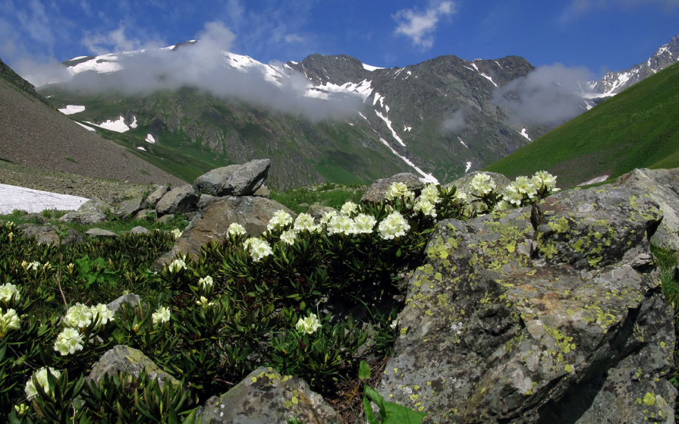Северная Осетия-Алания
Осетины – единственный народ Кавказа, живущий по обе стороны Большого Кавказского хребта. Единственный народ Северного Кавказа, говорящий на индоевропейском языке - потомке языка скифов, сарматов и алан. Причастность к аланскому наследию во многом определила национальное самосознание целого народа, древние обычаи сохранились не в этнографических музеях, а в повседневном быту осетин.
- Общая площадь региона 8 000 км²
- Население 696 837
- Объектов культурного наследия 1326
- Природных заповедников 3
.png) 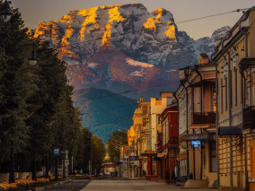
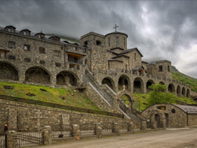
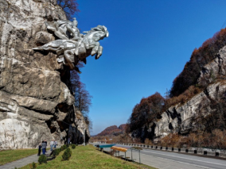
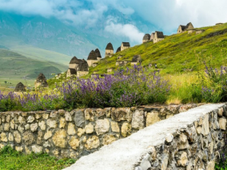
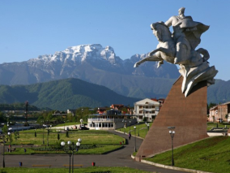
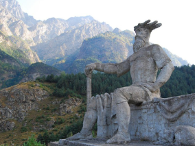
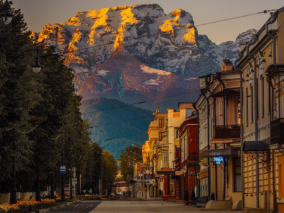
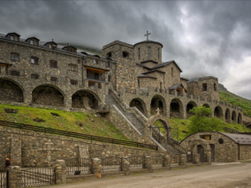
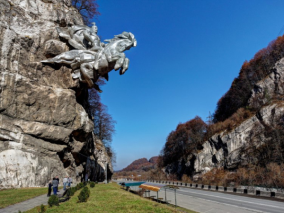
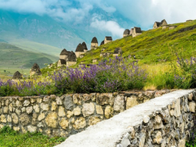
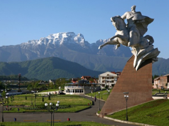
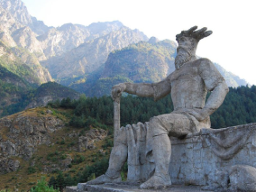
Долина водопадов
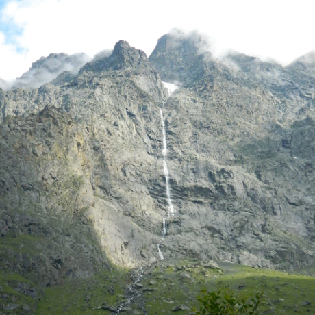МЕСТОПОЛОЖЕНИЕ
Мидаграбинское ущелье
В Северной Осетии разработаны несколько туристических маршрутов, охватывающие знаменитые достопримечательности горных районов республики. Самый популярный из них – «Путешествие в Долину водопадов». Маршрут начинается в селе Кобан - это название известно всем, кто хоть немного интересуется историей и археологией.
Далее маршрут проходит через село Даргавс, рядом с ним находится самый известный из средневековых некрополей Северного Кавказа. Конечная цель маршрута – Мидаграбинские водопады, чудо природы, открытое для туристов несколько лет назад.
Цей
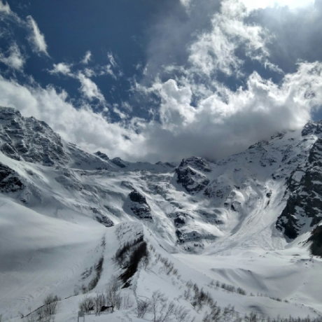МЕСТОПОЛОЖЕНИЕ
Цейское ущелье
Цейское ущелье манит туристов захватывающей дух живописностью, чистейшим горным воздухом и, разумеется, непередаваемой атмосферой, находится на северных склонах кавказского хребта.
Ущелье расположено на высоте 1300 метров и тянется на 23 километра с востока на запад. Это величественное природное сооружение образовано Кальперовским и Цейским хребтами. Здесь же находятся Скаазский и Цейский ледники.
Даргавс
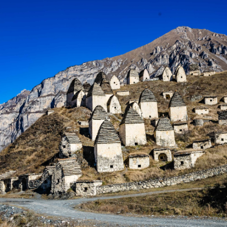МЕСТОПОЛОЖЕНИЕ
Кобанское ущелье
Городок мёртвых Даргавс получил столь мрачное название из-за древнего некрополя 14-18 вв., находящегося в километре от заброшенного селения. Территория располагающегося на склоне кладбища усыпана фамильными склепами, большинство из них - светлые низкие башенки со ступенчатыми шиферными крышами.
По высоте и сложности оформления погребальных домов можно получить представление об уровне достатка той или иной семьи. За пределами кладбища также встречаются одиночные захоронения в каменных постройках. Исследователи считают, что так было принято хоронить преступников и людей, ушедших из жизни добровольно.